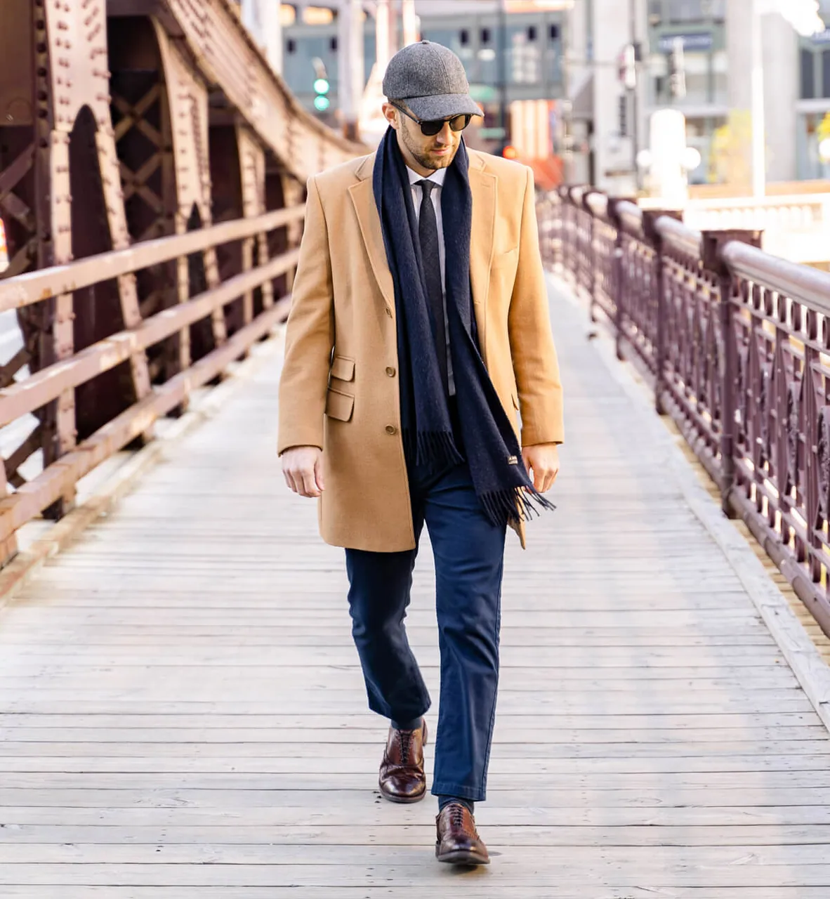
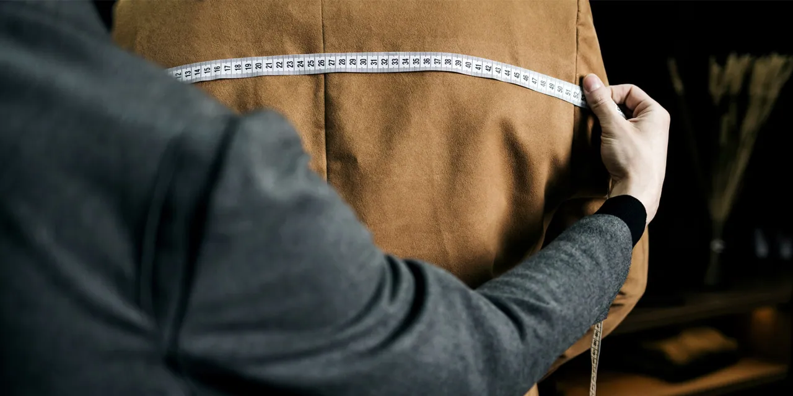
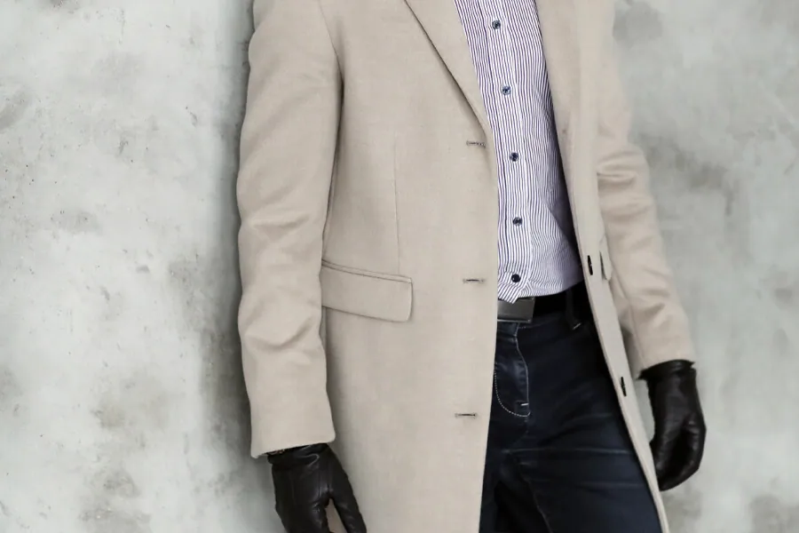
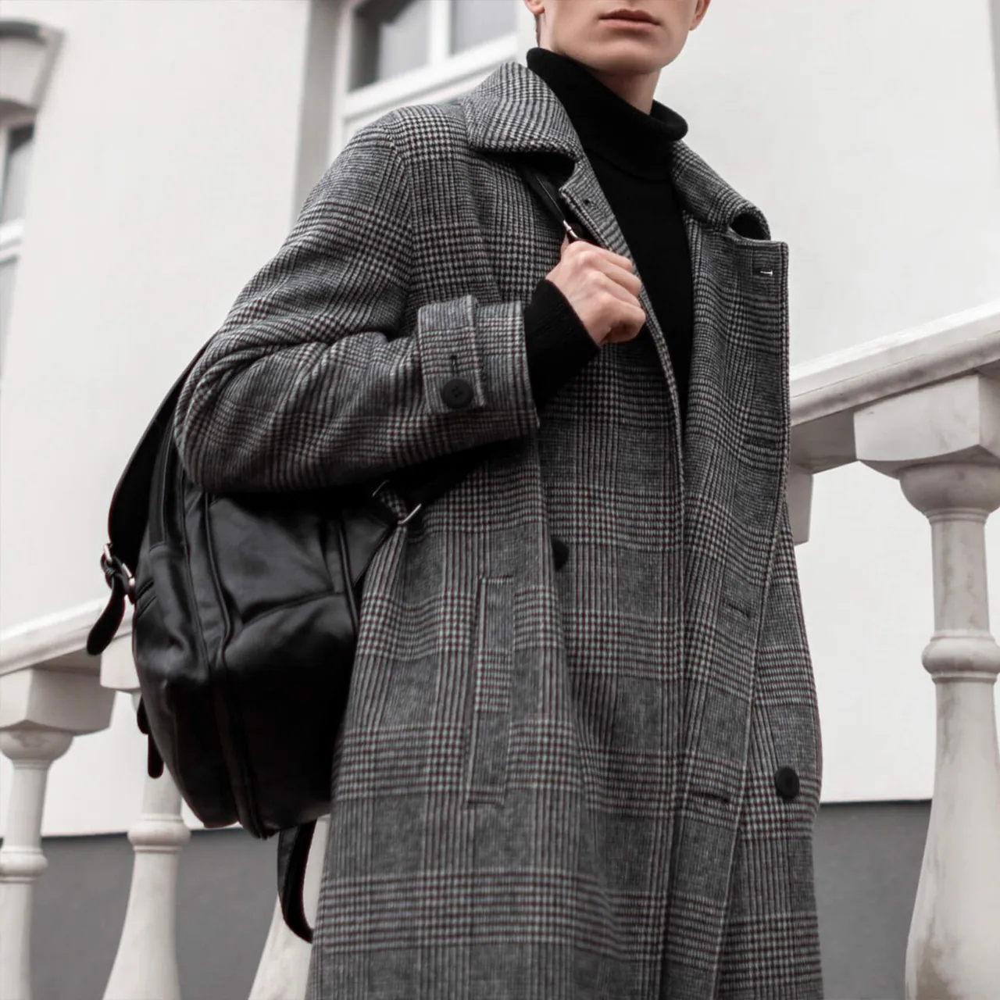
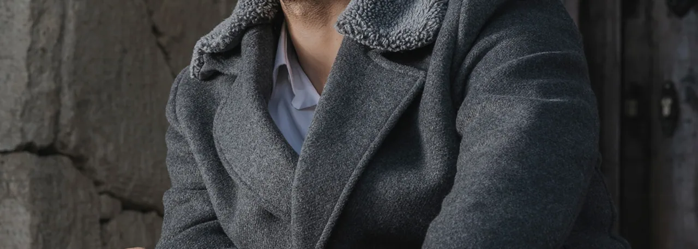
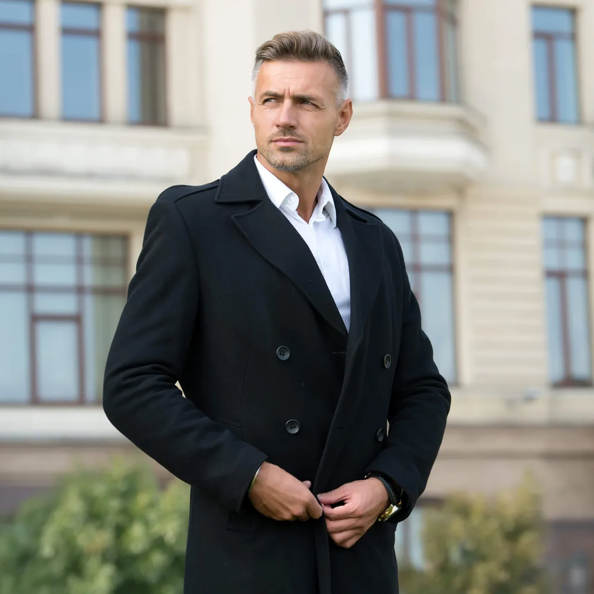
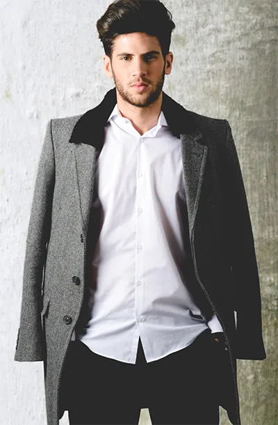
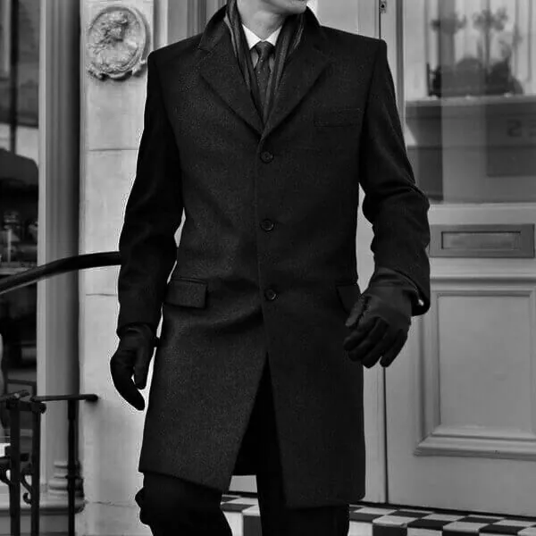

Индивидуальный пошив
Мужское пальто
Пальто для поездок на машине или долгих прогулок. Длину, ширину рукава и свободу движения закладываем в крой с учётом одежды, которую вы носите под ним.

Крой и посадка
Для автомобиля удобна укороченная модель, для прогулок — длина ниже колена. Шьём классические двубортные пальто, модели на молнии, свободные оверсайз и в стиле милитари.
На первой примерке
На примерке смотрим, как застёгиваются борта поверх пиджака. Рукав закрывает нижнюю одежду и заходит на ладонь примерно на 2–3 см.
Первая встреча — 1 час, первая примерка — 30 минут, финальная — 40 минут.


Какая ткань подойдёт
Шерсть, кашемир и твид подбираем по сезону. Можно обсудить тонкое весеннее, демисезонное или утеплённое зимнее пальто.
Как складывается цена
Плотность, рисунок и расход материала меняют цену. Отдельно обсуждаем персональную вышивку и отделку.
Ткани и поставщики

Фасоны и детали
Подборка кроя, фактур и отделки для разговора с портным.












Первая встреча
Сравним образцы и снимем мерки на Тверской, 9с7. Для посещения нужна предварительная запись.